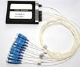
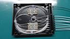
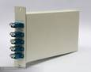

CWDM(Coarse wavelength division multiplexing)

Features
Low Insertion Loss
High Isolation
Low PDL
Compact Design
Good channel-to-channel uniformity
Wide Operating Wavelength: From 1260nm to 1620nm
Wide Operating Temperature: From -40℃ to 85℃
High Reliability and Stability
Applications
CWDM System CWDMXT
PON Networks PON
CATV Links
Compliance
Telcordia GR-1209-CORE-2001
Telcordia GR-1221-CORE-1999
RoHS
TU-T G.694.2
Specifications
Parameters |
1x2 |
1x4 |
1x8 |
1x16 |
|
Center Wavelength (nm) |
ITU, ITU+1 |
||||
ITU±6.5 |
|||||
Operating Wavelength (nm) |
1460~1620 or 1260~1620 |
||||
Channel Space (nm) |
20 |
||||
Fiber Type |
SMF-28e or customer specified |
||||
IL (dB) (P/A Grade) |
0.7/1.0 |
1.4/1.7 |
2.0/2.5 |
3.5/4.0 |
|
Isolation (dB) |
Adjacent Channel |
30 |
|||
Non-Adjacent Channel |
50 |
||||
Ripple (dB) |
0.3 |
0.4 |
0.5 |
0.5 |
|
PDL (dB) |
0.2 |
||||
PMD (ps) |
0.1 |
||||
RL (dB) |
45 |
||||
Directivity (dB) |
50 |
||||
Maximum Optical Power (mw) |
500 |
||||
Operating Temperature (℃) |
-40～85 |
||||
Storage Temperature (℃) |
-40～85 |
||||
BOX Package (mm) |
100*80*10 |
140*115*18 |
|||
LGX Package |
1U, 2U |
||||
19’’ Rack mount Package |
1U |
||||